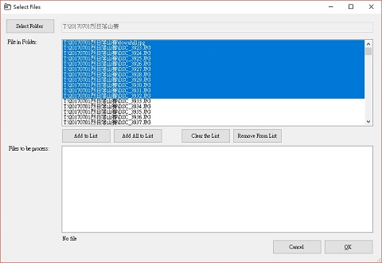
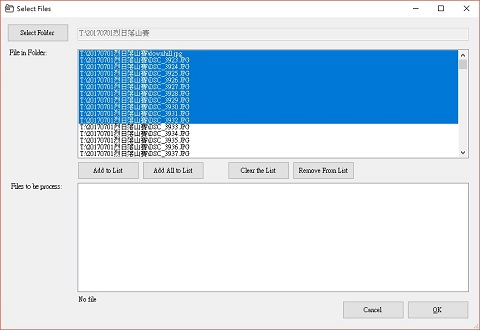
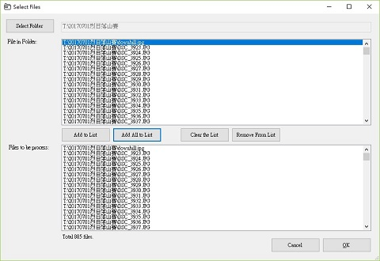

Select files to be Upload
After you specify all the picture upload
settings and parameters, the next step is to select which file to
be upload. On the main program page, click to bring up the selection window.
The system will remember the list of selected files in the current session. After you quit the system, you need to re-select the files again.
Click to select the picture folder.
After select the picture folder, you could see a list of jpeg files in the file list. You could select any files here. To select a range, use Shift-Click from begin to end.

The system will remember the list of selected files in the current session. After you quit the system, you need to re-select the files again.
Click to select the picture folder.
After select the picture folder, you could see a list of jpeg files in the file list. You could select any files here. To select a range, use Shift-Click from begin to end.

You have 4 options here.
- Add to list
Click this will add the selected file to the selection list.
- Add all to list
Click this will add all file to the selection list.
 - Clear the list
Click this will clear the selection list.
- Remove from list
Click this will remove selected item from the selection list.

After you make all the selections, you could
click to proceed or to cancel the selections.